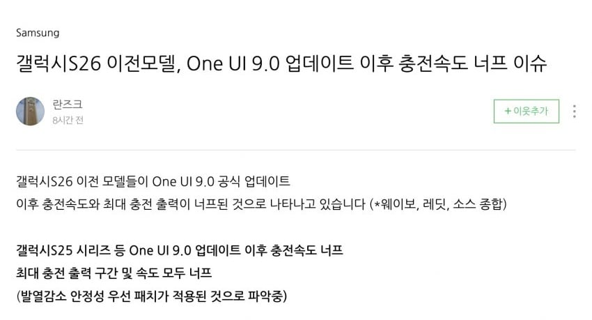

최근 2년간 국내/해외에서 S25시리즈 폭발 사고가 많아져서
그에따른 대응일거라는게 사용자들의 주장
최근
청주 갤럭시S25+ 폭발사고
서울 갤럭시S25울트라 폭발사고
고등학생 자녀 갤럭시S25+ 폭발사고
경북대 기숙사?에서 갤럭시S25+ 폭발사고로 인한 화재사고
남성분 달리는 버스 안에서 갤럭시S25+ 폭발사고
등등
??: 맘에 안들어? 그럼 바꿔~

최근 2년간 국내/해외에서 S25시리즈 폭발 사고가 많아져서
그에따른 대응일거라는게 사용자들의 주장
최근
청주 갤럭시S25+ 폭발사고
서울 갤럭시S25울트라 폭발사고
고등학생 자녀 갤럭시S25+ 폭발사고
경북대 기숙사?에서 갤럭시S25+ 폭발사고로 인한 화재사고
남성분 달리는 버스 안에서 갤럭시S25+ 폭발사고
등등
??: 맘에 안들어? 그럼 바꿔~
배터리 기술 너무 뒤쳐지는데..중국애들 충전기 60w짜리 넣어준것도 몇년 지난 이야기임
삼성전자. 를욕하는 글이 지속적으로. 조직적으로. 올라온다. 이런 애덜은,, 중국인 의심해야된다!! 그렇지않고서야 이렇게.조직적으로 계속 올릴수가 없다.. 뻔히 보인다 !! 싹 다 구속시켜야 한다!!
자유민주주의. 대한민국의 자랑스러운 기업. 삼성을 좀먹는. 쓰레기 앱등이 중국인들아. !!🤣🤣🤣
이런데도 틀럭시 빠는 소중국인들 ㅋㅋㅋㅋ
그럼 뭘빨죠?
국뽕 다 빼놓고 핸드폰만 놓고보면 국내에서나 아이폰이랑 경쟁하는거지, 해외로 놓고보면 그냥 해외에선 중국산 폰 보는거랑 다를게 있나 싶음
인지도라도 있어서 플래그십 내놓으면 사는거지 솔직히 한국사람 아니면 이 돈내고 갤럭시 살바엔 아이폰 사고말지
진지하게 다음폰 아이폰가야하나..
어쩐지 케이블에 전력량 표시되는데 숫자가 안 올라 가더라 ㅋㅋ
애플 삼성 둘다 정신줄 놓고 만드네
오늘 자면서 충전중이던 핸드폰 베개 밑에 들어가서 개뜨거웠음 94% 까지만 충전되있더라 뜨겁다고 충전 막은듯 1목숨세입
s26인데 다행이긴하네